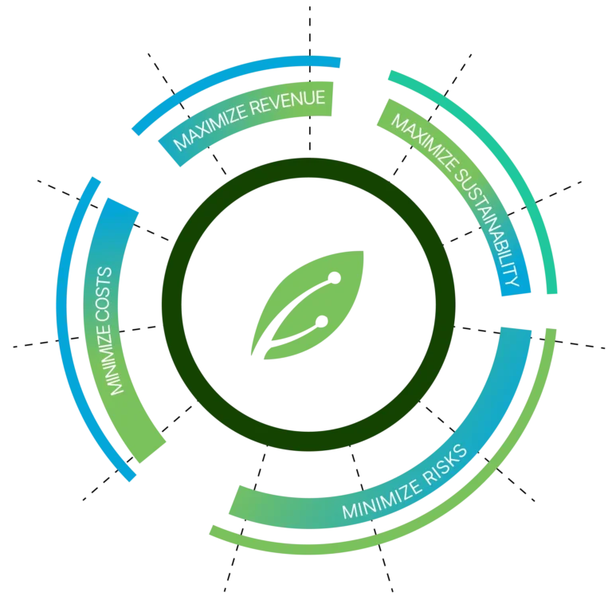

Farming for the future needs a whole new
kind of power
Agroguard Cloud - smart agriculture powered by AI.
Explore AgroguardWe're not just another agri-tech company
Smart agriculture impact in numbers
0%
Reduction in post-harvest spoilage
0%
Faster market delivery time
0%
Improvement in price prediction accuracy
0%
Increase in farmer profit
0%
Better crop rotation & soil health planning
Helping customers unlock value with digitization and AI

 Yield & quality improvement
Yield & quality improvement
 chain efficiency
chain efficiency
 Ensure regenerative & sustainable practices
Ensure regenerative & sustainable practices
 Ensure traceability, certification & compliance
Ensure traceability, certification & compliance
 Building climate resilience
Building climate resilience
 Ensure risk coverage & access to finance
Ensure risk coverage & access to finance
 Surety of supply
Surety of supply
 Market expansion
Market expansion
 Resilient sourcing
Resilient sourcing
 Manage market or price volatility
Manage market or price volatility
 Crop loss management
Crop loss management
Yield & quality improvement chain efficiencyEnsure regenerative & sustainable practicesEnsure traceability, certification & complianceBuilding climate resilienceEnsure risk coverage & access to financeSurety of supplyMarket expansionResilient sourcingManage market or price volatilityCrop loss managementChallenges we solve
Unpredictable Post-Harvest Spoilage
Farmers lack tools to estimate how long crops will remain fresh under different storage conditions, leading to unnecessary waste.
Inefficient Logistics & Transport Timing
Delayed or poorly planned transportation causes crops to rot before reaching markets, increasing financial loss.
Unreliable Market Demand & Price Awareness
Farmers sell without knowing future demand or price trends, often resulting in distress sales or overproduction.
Repetitive Crop Cycles & Soil Degradation
Continuous cultivation of the same crops reduces soil nutrients and increases pest risk, lowering long-term productivity.